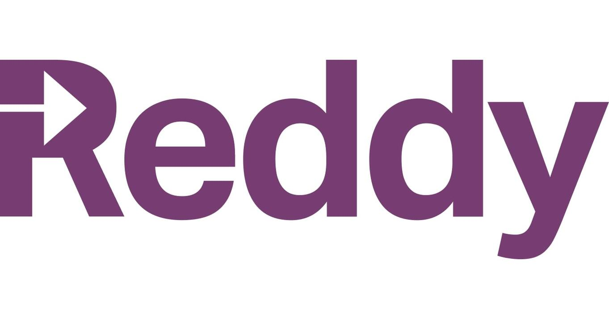
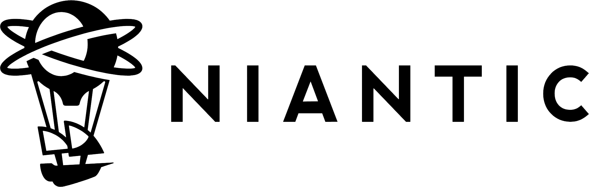
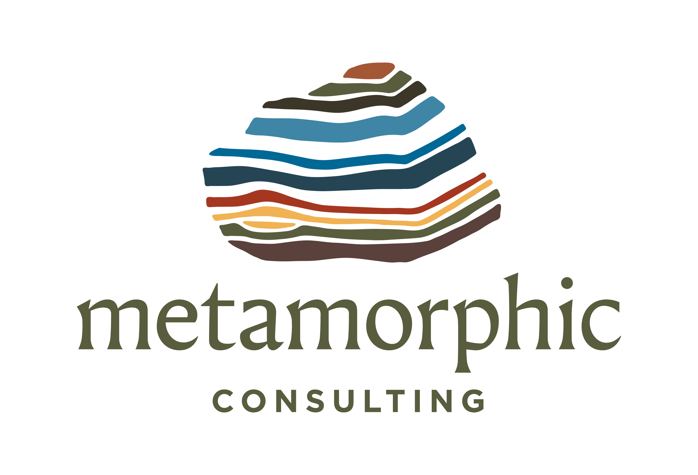
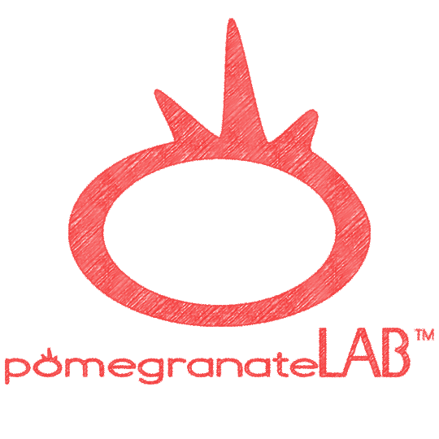

Curriculum I've worked on

Reddy
Created AI-powered simulations for call centers and helped develop their internal learning management tool used by Fortune 100 companies
Ramp
Game-based onboarding for accounting and finance principles

Snapchat
Hackathon challenge curriculum used internationally across offices and affiliated programs

Niantic
Educating their marketing team on the values of VR and AR
Solana
Web3 engineer onboarding gap analysis to diversify their engineering pipeline

America Needs You
In-person programming for hundreds of professionals and young adults, internship programs, and monthly online curriculum for thousands of students across 70 schools
IMG / Endeavor
Ran a community for women in sports entertainment to help them advance in the field

Metamorphic Consulting
Helped codify how they assist nonprofits in landing grants through leadership knowledge capture
College Start-up
Designed a "Design Your Life" curriculum that allowed learners to travel abroad and study online certifications alongside a place-based curriculum

Pomegranate Labs
Helped build a growth mindset curriculum employed in over 40 schools
Democracy Prep / NYC DOE
Grade level chair, leading curriculum and instruction across the team

D&D for Young People
Running Dungeons & Dragons games as a social-emotional learning curriculum for kids — teaching collaboration, problem-solving, and empathy through play